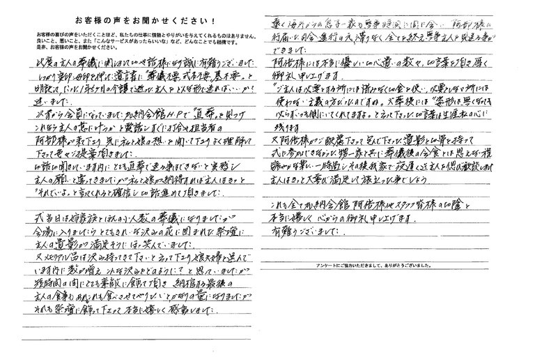

ご家族からのメッセージ
此度の主人の葬儀に関しましてお世話様になり誠に有難うございました。しっかり実印、母印を押した遺言書に”葬儀不要、戒名不要、墓不要"と明記してたった１年５か月の介護で逝った主人をどんな形で送ればいいか？迷いました。
以前から会員になっていました加納会館HPで"直葬”を見つけ、これなら主人の意に叶うかと電話しすぐに打合せ担当者の阿部様が来てくださり、先に私と娘の想いを聞いて下さりよく理解して下さって色々ご提案頂きました。お話お聞きしています内にとても直葬で送ることはできないと実感し主人の願いと違ってきましたが、私と娘が納得すれば主人もきっと”それでいいよ"と言ってくれると確信しお話進めていただきました。
式当日は姉家族とほんの少人数の葬儀になりましたが、会場に入りましたらとてもきれいな沢山の花に囲まれた祭壇に主人の遺影が満足そうにほほ笑んでいました。又、メモリアル品は沢山持ってきてくださいと言ってくださり娘夫婦と選んでいます内に数が増え、こんな沢山どのようにして？と思っていましたが、短時間の間にとても素敵に飾って頂き、納棺する最後の主人の食事もあれもこれも食べさせてやりたいとかなりの量になりましたが、それも祭壇に飾って下さって、本当にうれしく感動しました。
遠く海外からの息子一家も無事時間に間に合い、阿部様の行き届いた司会進行のもと、滞りなく全てを終え無事主人を見送ることができました。
阿部様には本当に優しいお心遣いの数々、お言葉を頂き厚く御礼申し上げます。
”ご主人は必要とするところには惜しみなくお金を使い、必要としないところには使わない主義の方だったのですね” 火葬後には”姿形は無くなっても必ず側にいてくれますよ”と言ってくださったお言葉は生涯私の心に残ります。
また、阿部様がご配慮くださって包んでくださった遺影とお骨を持って式に参加できなかった甥一家と共に葬儀後の会食とは思えない程賑やかな楽しい一時を過ごし、その後我が家で夜遅くまで主人を偲び歓談しました。主人はきっと大喜び満足して旅立ったことでしょう。
これも全て加納会館 阿部様他スタッフ皆様のお陰と本当に嬉しく心から御礼申し上げます。
有難うございました。
箕面市 M様
利用式場：
加納会館 今宮
掲載アンケート
